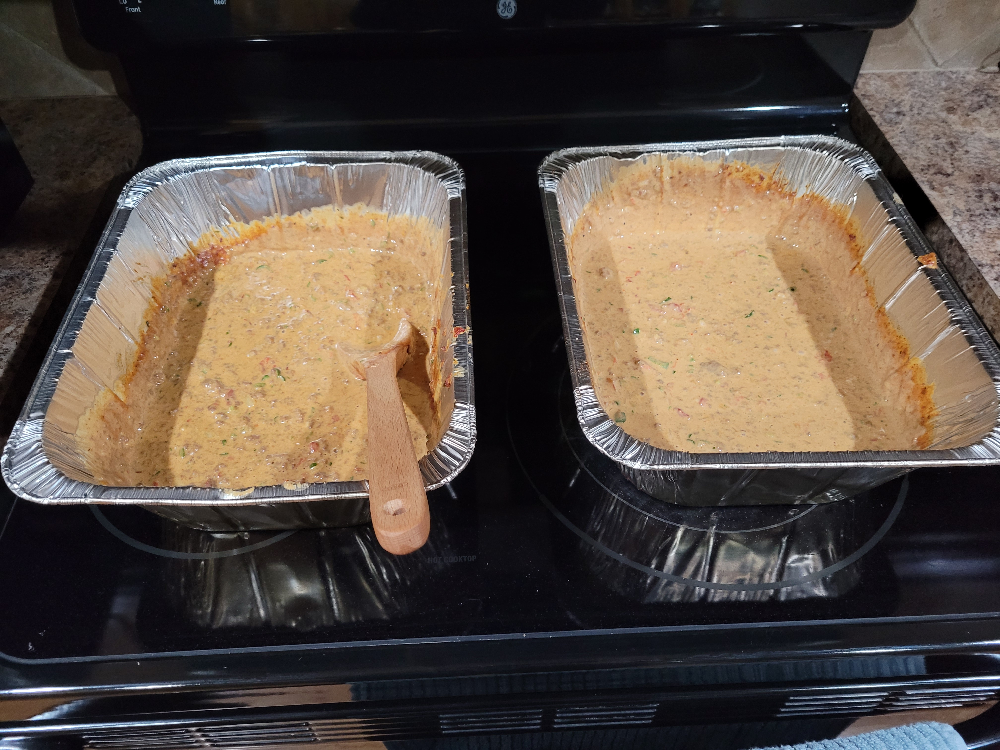

Meat Church Smoked Queso

The best smoked queso you'll ever eat!
Original recipe from Meat Church BBQ. During the pandemic we started focusing on easy recipes largely made of items you may already have in your pantry. I asked Doug if we could shoot a video on his recipe. He gave us permission and the next month the internet and social media exploded with queso photos. This stuff is a hit!
One note - since we are using Velveeta, we need to add a creamy soup for cheese consistency. We've been getting a lot of question on that one. Of course you can sub all the ingredients. You can use other cheese, coups and make your own Pico de Gallo instead of the Rotel, but again, this was supposed to be an easy one. We hope you enjoy!
Ingredients
- 1 2lb block of Velveeta (don't go generic)
- 1 large white onion
- 16 ounces of smoked gouda
- 2 tubes of HOT breakfast sausage (any ground meat will do, even chorizo)
- 2 cans of Rotel
- 1 can of cream of jalapeno soup (chicken can be substituted)
- Various fresh peppers to taste/heat level
- 1/2 cup of diced cilantro
- 2 Tablespoons of Meat Church Holy Voodoo seasoning (or any southwest flavored rub/spice blend)
Instructions
- Prepare smoker at 350 degrees, use a heavy smoke wood like oak or mesquite
- Brown the ground meat until fully cooked, the smoker is adding flavor and melting ingredients -- not cooking the meat itself
- Cube velveeta and put in dutch oven, foil pan, or other large container
- Dice all fresh ingredients and add to container
- Add browned ground meat
- Add all canned ingredients
- Put container on smoker, stir every 5 minutes after the first 10. Cook time should be around 30-45 minutes.
Return to Odin Recipes